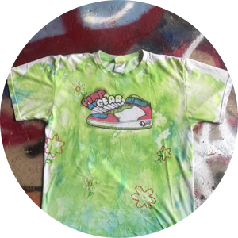

Insight into our brand,
We are a sustainable fashion brand that upcycles old items of clothing and/or accessories and give them a second life.
CEO's: Cristina Alvaréz e Isabella M. Pedreira
- 
Our Brand name directly translates to Bitches dot com. Perras.punto.com was created during the 2019 Summer in the midst of political turmoil in Puerto Rico. The governor was forced to resign due to protests; a group message with participants including our governor and his closest advisors, came to light where they adressed women as whores. The Puerto Rican People took this derrogatory term of PUTA, and Transformed it into P.U.T.A-Puerto Ricans United Taking Action. Not only did this message resonate with our brand but we also wanted to take the power out of the derrogatory term that is Puta and Perra and use it as a sign of strength.